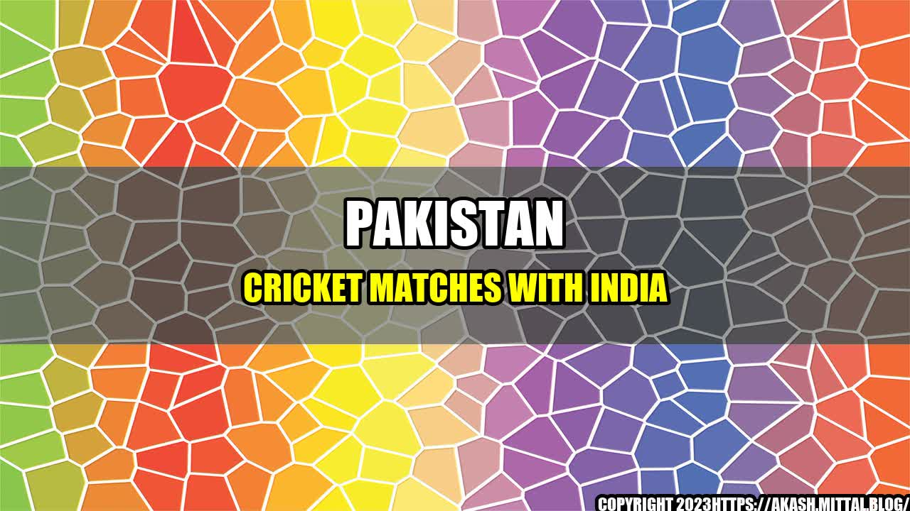

Pakistan has only itself to blame for stopping of India-Pakistan cricket matches

The India-Pakistan cricket rivalry has always been one of the most talked-about and fiercely competitive matches in the world. However, it is sad to see that since the 2008 Mumbai attacks, the two nations have not played any bilateral cricket. Both governments had agreed that cricket and other sports could create goodwill and improve strained relations, but series after series has failed to materialize. While fans from both sides of the border continue to express their desire for the resumption of cricket matches, it seems that Pakistan has only itself to blame for the current situation.
Examples of Pakistan's role in stopping the India-Pakistan cricket matches
- Misuse of cricket to promote terrorism: In 2009, the Sri Lankan cricket team was attacked by militants in Pakistan. The incident was a clear indication that the country had become a breeding ground for terrorism. In 2016, the International Cricket Council (ICC) decided to move the World T20 tournament out of Pakistan due to security concerns. Pakistan Cricket Board chairman Shaharyar Khan admitted that the ICC's decision was based on the country's inability to provide security to visiting teams. Such incidents have put Pakistan's image as a safe venue for cricket in doubt and have resulted in other nations refusing to play cricket in the country.
- Unwillingness to take action against players involved in corruption: The Pakistan Cricket Board has repeatedly failed to take strict action against players involved in corruption. In 2011, three Pakistani players were jailed in the UK for their role in spot-fixing during a tour of England. Even after this incident, the board did not take any significant measures to eradicate corruption in the sport. In 2017, another player was banned for three years for his involvement in fixing a domestic T20 tournament. Such incidents have raised serious questions about the integrity of cricket in Pakistan and have left other nations unwilling to play with them.
- Political tensions and refusal to play in neutral venues: Despite several attempts by the Indian cricket board to resume bilateral series, Pakistan's refusal to play in neutral venues has been a major stumbling block. Moreover, political tensions between the two nations have further complicated the matters. Notably, in 2019, after the Pulwama attack in India, the Indian cricket board decided to boycott Pakistan from the World Cup. This situation left fans from both sides angry and frustrated and further worsened the relationship between the nations.
Case Studies supporting the argument
- The 2008 Mumbai attacks: One of the most significant incidents that have led to the current situation between India and Pakistan was the 2008 Mumbai attacks. The attacks, which were perpetrated by terrorists based in Pakistan, claimed the lives of over 160 people and left hundreds of others injured. The incident strained the already fragile relationship between the two nations, and the Indian government blamed Pakistan for its involvement in the attacks. The Indian cricket board decided not to play any matches with Pakistan in the aftermath of the incident.
- The attack on Sri Lankan cricket team: In 2009, the Sri Lankan cricket team was attacked by militants in Pakistan, resulting in the death of six Pakistani police officers and two civilians. The incident raised serious concerns about the security situation in Pakistan and left other nations unwilling to play cricket in the country. The ICC subsequently decided to move the 2011 World Cup matches from Pakistan to India, Bangladesh, and Sri Lanka.
- The spot-fixing scandal: In 2011, three Pakistani cricket players were found guilty of spot-fixing during a tour of England. The incident severely impacted the image of Pakistani cricket and raised serious questions about the integrity of the sport in Pakistan. The players were subsequently banned and jailed, but the Pakistan Cricket Board did not take any significant measures to eradicate corruption from the sport.
Conclusion
The resumption of India-Pakistan cricket matches is not only important for fans but also for the two nations' relationship. However, the lack of progress on this front is largely due to Pakistan's unwillingness to address the issues that have led to the current situation. Notably, the country's failure to provide security to visiting teams, its reluctance to take action against players involved in corruption, and its refusal to play in neutral venues have impacted its image and left other nations unwilling to play cricket with Pakistan. Furthermore, political tensions between the two nations have further complicated the matter. Therefore, Pakistan needs to take concrete steps to address these issues and work towards the resumption of cricketing ties with India.
References and Hashtags
SEO Keywords
- India-Pakistan cricket rivalry
- Pakistan cricket matches with India
- terrorist attacks in Pakistan
- Pakistan's failure to provide security to visiting teams
- Pakistan's unwillingness to take action against players involved in corruption
- India-Pakistan political tensions
- resumption of India-Pakistan cricket matches
Article Category
Sports
Curated by Team Akash.Mittal.Blog
Share on Twitter Share on LinkedIn